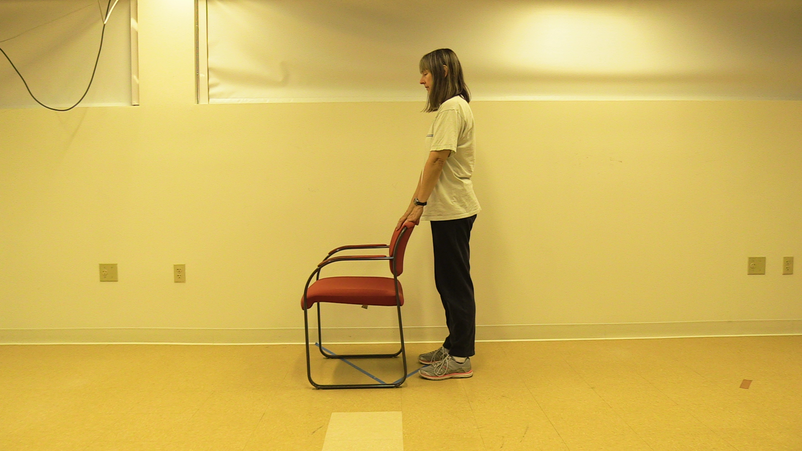
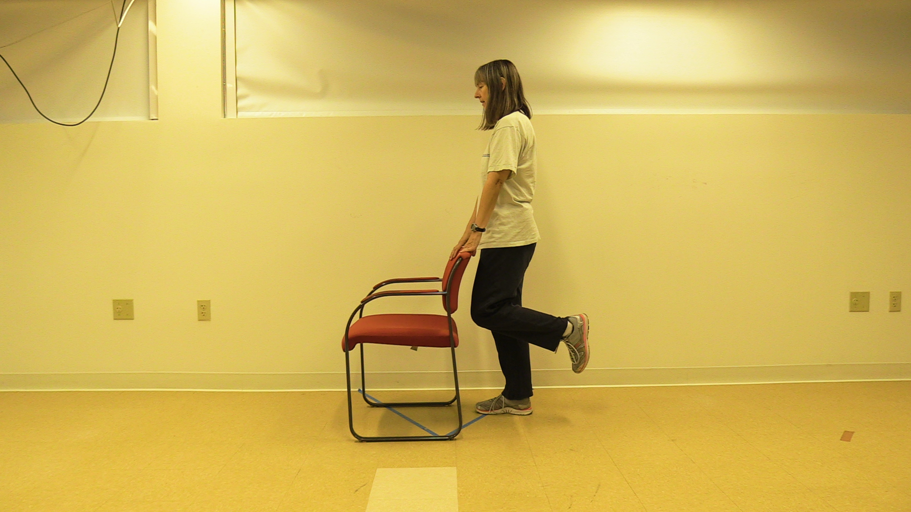
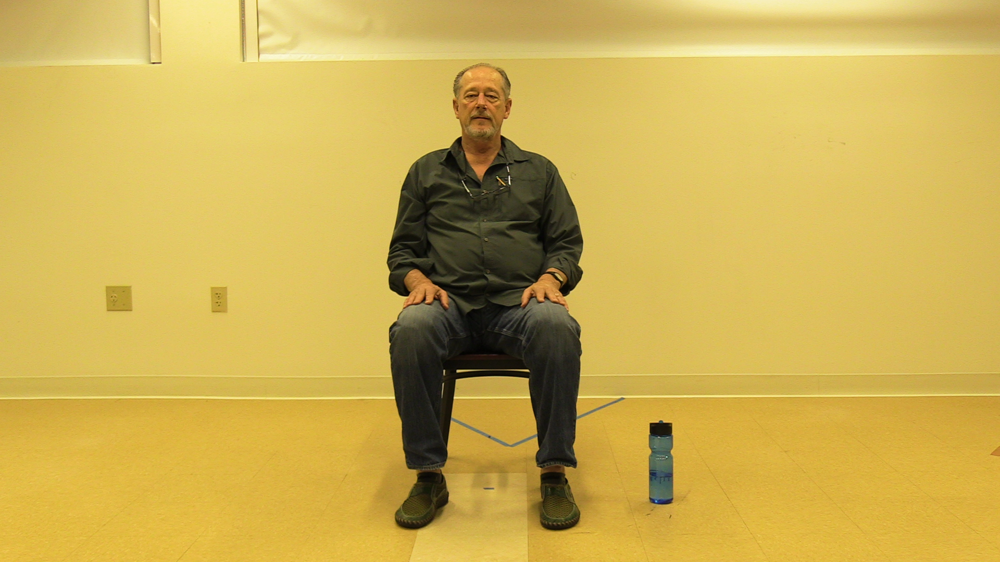
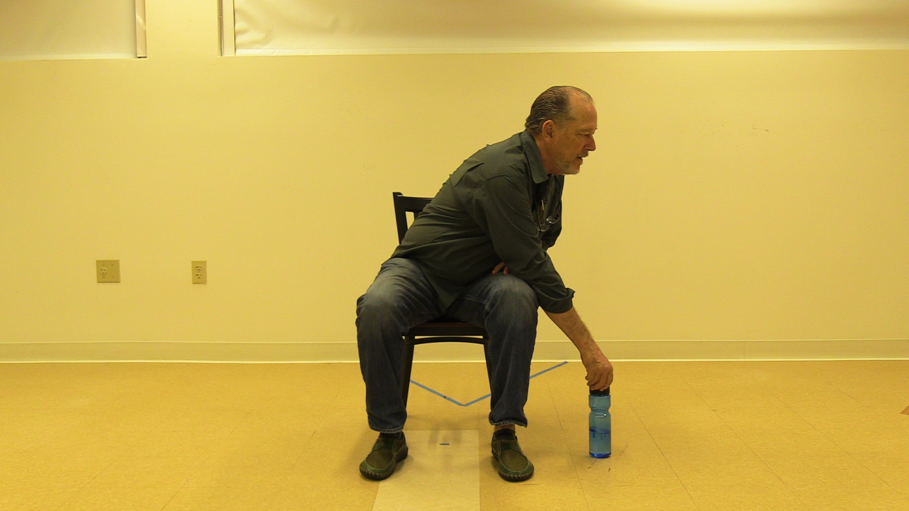
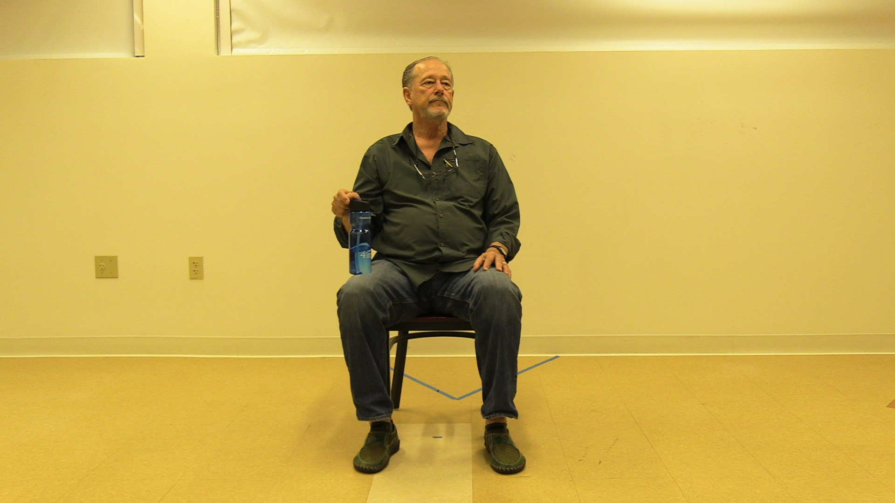
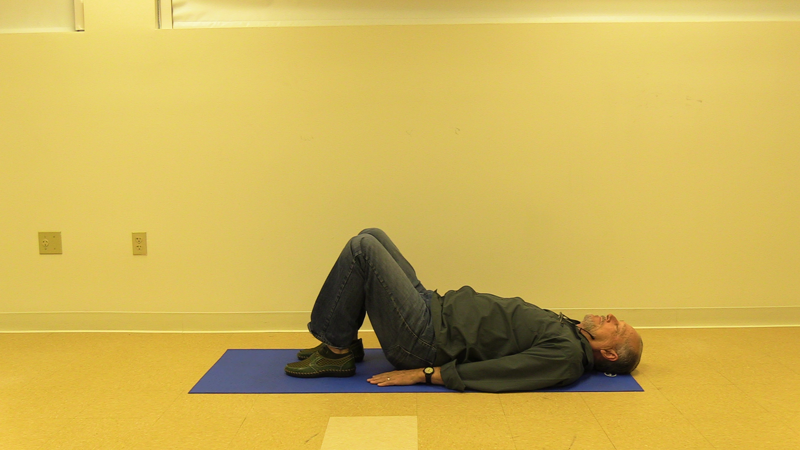
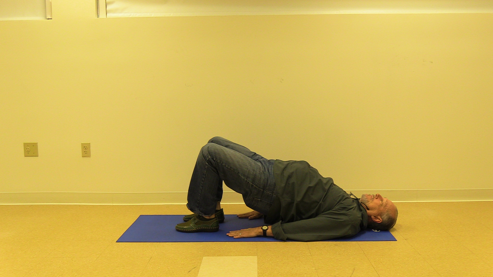

Lower Body: Hamstring Exercise
This exercise is to strengthen the muscles in your thigh. Perform 3 sets of 10-15 repetitions on each leg.
Equipment:
Sturdy chair, theraband (more challenging only)
*Note- You will feel the muscles in the back of your thigh working.
Instructions:
- Begin standing behind the chair, holding the backrest for support.
- Curl one foot towards your buttocks as much as can.
- Return foot to ground.
- This is one repetition. Remember you need to do 3 sets of 10-15 repetitions on each leg.
Making it harder (more challenging):
- Tie your theraband to the front leg of the chair.
- Stand behind the chair and loop your foot through the theraband, holding the backrest for support.
- Curl one foot towards your buttocks.
- Return foot to ground.
- This is one repetition. Remember you need to do 3 sets of 10-15 repetitions on each leg.
Making it easier (less challenging):
- Begin standing behind the chair, holding the backrest for support.
- Curl one foot towards your buttocks about 6 inches off the ground.
- Return foot to ground.
- This is one repetition. Remember you need to do 3 sets of 10-15 repetitions on each leg.
Initial Position | Final Position |
 |  |
Flexibility: Spine Exercise
This exercise is to strengthen the muscles in your trunk (your abdomen and spine). Perform 3 sets of 10-15 repetitions of this exercise.
Equipment:
Sturdy chair, a short cup 4-6 inches in height, a soup can (more challenging only), tall cup 8-10 inches in height (less challenging only)
*Note- You will feel the muscles on the sides of your trunk working.
Instructions:
- Place a short cup on the floor to one side of the chair.
- Start seated tall in the chair.
- Without twisting, lean to the side, grab the cup and return to sitting tall.
- Lean to the opposite side, placing the cup on the ground and return to sitting.
- This is one repetition. Remember you need to do 3 sets of 10-15 repetitions.
Making it harder (more challenging):
- Place a soup can on the floor to one side of the chair.
- Start seated tall in the chair.
- Without twisting, lean to the side, grab the can and return to sitting tall.
- Lean to the opposite side, placing the can on the ground and return to sitting.
- This is one repetition. Remember you need to do3 sets of 10-15 repetitions.
Making it easier (less challenging):
- Place a tall cup on the floor to one side of the chair.
- Start seated tall in the chair.
- Without twisting, lean to the side, grab the cup and return to sitting tall.
- Lean to the opposite side, placing the cup on the ground and return to sitting.
- This is one repetition. Remember you need to do 3 sets of 10-15 repetitions.
Initial Position | Second Position | Final Position |
 |  |  |
Lower Body: Bridge
This exercise is the strengthen the muscles in your legs and buttocks. Perform 3 sets of 10-15 repetitions.
Equipment:
Flat surface (your bed or floor), heavy book (more challenging only)
*Note: you feel the muscles in your buttocks and back of your legs working.
Instructions:
- Begin laying flat on your back with your knees bent, feet placed under your knees.
- Rest your arms long by your side.
- Push through your heels, to lift your hips up until your trunk is in a straight line.
- Return your hips back to the surface.
- This is one repetition. Remember you need to do 3 sets of 10-15 repetitions.
Making it harder (more challenging):
- Begin laying flat on your back with your knees bent, feet placed under your knees.
- Hold a heavy book to the front of your hips.
- Push through your heels, to lift your hips up until your trunk is in a straight line.
- Return your hips back to the surface.
- This is one repetition. Remember you need to do 3 sets of 10-15 repetitions.
Making it easier (less challenging):
- Begin laying flat on your back with your knees bent, feet placed under your knees.
- Rest your arms long by your side.
- Push through your heels, to lift your hips up 2-4 inches off the surface.
- Return your hips back to the surface.
- This is one repetition. Remember you need to do 3 sets of 10-15 repetitions.
Initial Position | Final Position |
 |  |